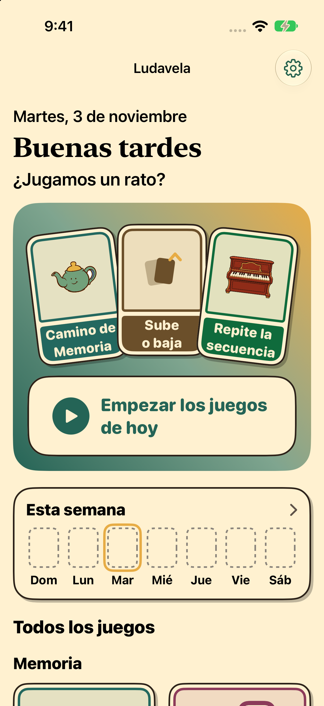
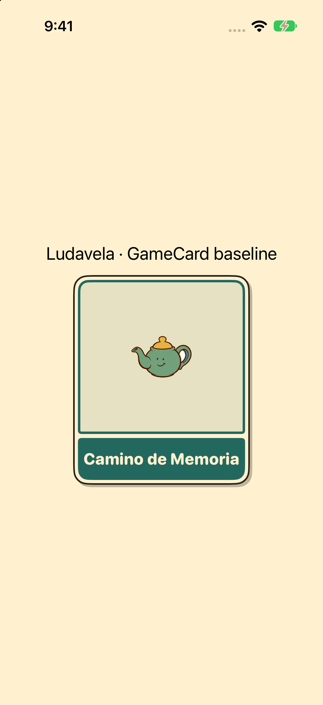
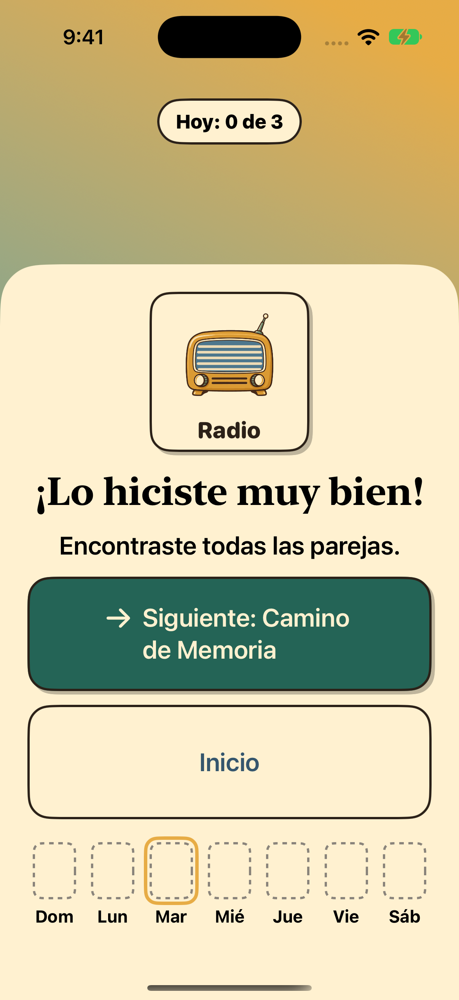

ESTUDIO VISUAL · 03 NOV 2026 · #579
Ludavela, una sobremesa ilustrada
Propuesta aplicada a inicio, carta y celebración. Conserva los dibujos de Ludavela y concentra la expresividad en ellos. Estas maquetas son exploraciones, no capturas de una versión implementada.
Recomendación de trabajo: crema actual, mesa plana, títulos sobre crema y siguiente acción primero. La elección visual final del propietario sigue pendiente.
01 · Un punto claro para empezar
La acción permite empezar y las tres cartas recomendadas siguen disponibles para tocar directamente. Se conserva cómo se marca lo jugado y el registro de cada día.
Actual · ejecución de la app
iPhone 17 · ES · claro. Baseline d53c28f.

Ver captura iPad
Propuesta · abanico conservado
Composición conceptual con abanico conservado; los juegos de ejemplo pueden diferir del plan real.
LudavelaAjustes
A tu ritmo
¿Jugamos un rato?
Jugar ahora · Camino de Memoria
Tus juegos de hoy

Camino de Memoria

Nombra el grupo ✓

Ojo rápido
Todos los juegos ↓
02 · El dibujo respira
Un marco exterior, una ilustración reconocible y el nombre completo. El color del juego queda como acento, sin competir con el título. Las tarjetas conservan sus acciones y marca de completado.
Actual · componente real
GameCard sin modificar, montado en fixture de captura.

Ver captura iPad
Propuesta · carta de catálogo
La variante de banda permite comparar la misma carta.
Ludavela
Un rato para jugar
Camino de Memoria
Nombre completo. Ilustración amplia. El estado completado conserva una marca ✓, además del color.
03 · Un cierre amable y una salida clara
La celebración tiene un protagonista, una frase y una acción. La oferta de nivel y los detalles semanales conservan acceso; se especifican en el documento de estados.
Actual · componente real
CelebrationView sin modificar; fixture, no partida real completada.

Ver captura iPad
Propuesta · partida intermedia
Maqueta de una posible composición.

¡Qué buen rato!
Encontraste todas las parejas.
Seguir con Ojo rápido
Volver al inicio
Tu partida ya está en tu semana ✓
Movimiento breve, con alternativa quieta
1 · Aparece
La carta llega una sola vez. La acción ya se puede tocar.
2 · Responde
Una presión corta confirma el toque; nada rebota continuamente.
3 · Se guarda
Al terminar, la carta se coloca en la semana. Reduce Motion: estado final inmediato con marca ✓.
De las referencias a la pantalla
| Referencia | Rasgo | Aplicación |
|---|
| 0 · Atomic | Crema, jade, mostaza; jerarquía editorial | Inicio, fondos y acción principal |
| 2 · personajes y geometría | Siluetas claras y formas planas | Composición de bienvenida futura; aquí, masas simples de la mesa |
| 1, 3, 4 · caricatura clásica | Curvas y gestos elásticos contenidos | Storyboard de entrada, toque y celebración |
| 5 · objetos expresivos | Objetos reconocibles con carácter | Cartas y celebración usando el arte existente |